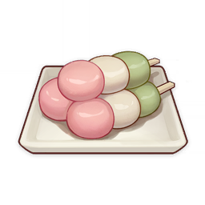

Odin Recipes
Tricolor Dango (Return)

Ingredients:
- Glutinous rice flour
- Water
- Sugar (optional)
- Food coloring (pink and green)
- Bamboo skewers
Instructions:
- Prepare Dough: Mix glutinous rice flour with water to form a smooth dough. Divide into three portions.
- Color Dough: Leave one portion white, color one pink, and the other green using food coloring.
- Form Dango: Roll each colored dough into small balls.
- Cook Dango: Boil the dango until they float, then cool them in ice water.
- Skewer & Serve: Skewer one of each color onto bamboo sticks and serve.
For more details, visit the Tricolor Dango page.